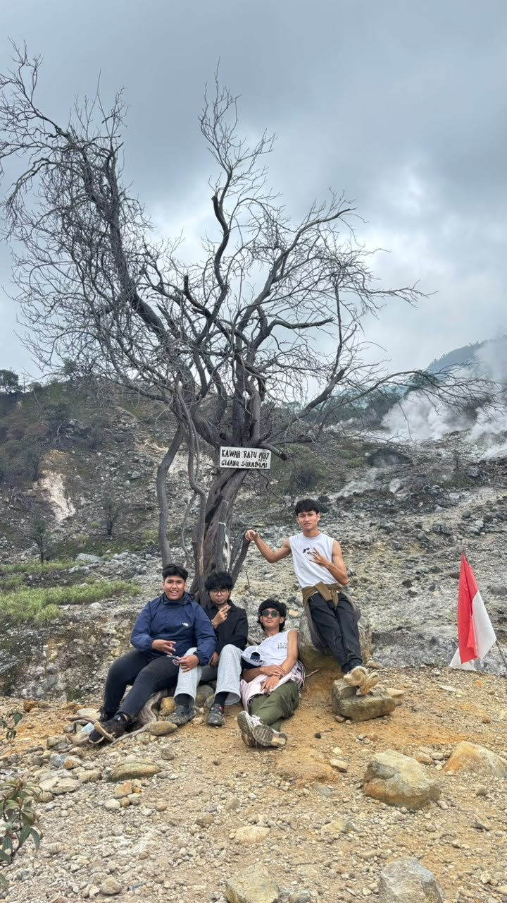

Baru mau mulai naik gunung?

Di Kawah Ratu, Gunung Salak. Foto: dokumentasi pribadi.
Pengin naik gunung tapi bingung mulai dari mana? Di sini ada pilihan gunung di Jawa Barat yang jalurnya masih ramah buat pemula, lengkap sama ketinggian dan perkiraan lama jalannya.
Habis ketemu gunung yang cocok, tinggal siapin barang bawaan, terus isi form kalau mau ikut open trip bareng.
Isi situs
Menu
- Pilih Gunung: tabel gunung buat pemula.
- Persiapan: barang bawaan dan aturan di gunung.
- Gabung Open Trip: form kalau mau berangkat bareng.
Tips singkat
- Mulai dari gunung dengan jalur pendek dulu.
- Cek cuaca dan info jalur sebelum berangkat.
- Kalau badan lagi nggak enak, mending batal.
- Sampah dibawa turun lagi.